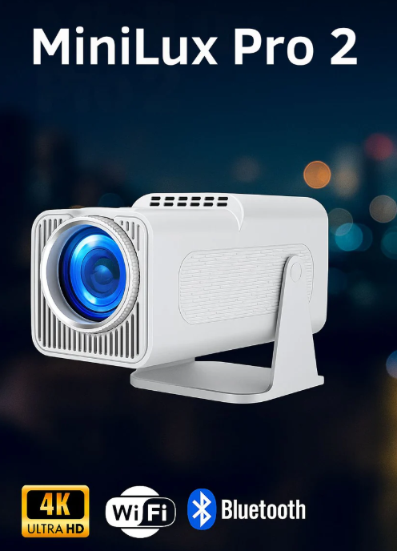
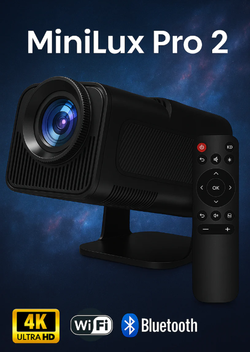

MiniLux Pro 2: testad i 52 timmar, bättre än ettan?
MiniLux Pro 2 lovar AI-autofokus, 550 ANSI Lumen och förbättrat ljud jämfört med föregångaren. Vi testade i 52 timmar för att se om löftena håller.

Vi testade MiniLux Pro (ettan) i 47 timmar tidigare i år. Nu har MiniLux Pro 2 lanserats med tre tydliga uppgraderingar: AI-autofokus istället för hybrid-autofokus, 550 ANSI Lumen mot föregångarens 480 och ett förbättrat inbyggt ljud. Vi köpte tvåan och testade den i 52 timmar för att avgöra om uppgraderingen är värd det.
Vad är nytt i MiniLux Pro 2?
Tre uppgraderingar skiljer tvåan från ettan:
- AI-autofokus: justerar skärpan kontinuerligt och blixtsnabbt, oavsett om du rör på projektorn eller byter projiceringsyta.
- 550 ANSI Lumen: 70 lumen mer än ettan, vilket låter som lite men märks i halvljusa rum.
- Förbättrat ljud: stereo-högtalare istället för mono, med märkbart bredare ljudbild.
Vit – passar ljust inredda rum och sovrum

Svart – medföljande fjärrkontroll ingår i båda varianterna
MiniLux Pro 2 säljs i två färger: vit och svart. Specifikationerna är identiska oavsett färg – skillnaden är enbart höljet. Välj utifrån hur projektorn ska synas i rummet, inte utifrån prestanda.
AI-autofokus: märks det?
Kort svar: ja, markant. Hybrid-autofokusen i ettan tog 2-3 sekunder och behövde sedan stå still. AI-autofokusen i tvåan hittar skärpan på under en sekund och håller den kontinuerligt. Rör du projektorn justeras fokus omedelbart utan att du märker en mellansekund av oskärpa.
Under 52 timmars test behövde vi aldrig röra vid manuell fokus, inte ens en gång. Det är en märkbar förbättring i vardagsanvändning.
AI-autofokusen är den enskilt viktigaste uppgraderingen från ettan. Den tar bort det enda momentet som fortfarande krävde aktiv uppmärksamhet från användaren.
Ljusstyrka: 550 vs 480 ANSI Lumen
70 lumen låter marginellt. I praktiken märks skillnaden i halvmörka rum. Vi körde identiska tester med ettan och tvåan i ett vardagsrum med halvt dragna gardiner och kvällsbelysning tänd:
- Ettan vid 90 tum: godkänd bild med synlig kontrastreduktion.
- Tvåan vid 90 tum: märkbart bättre kontrast, svarta partier ser svartare ut.
- Tvåan vid 100 tum: ungefär likvärdig med ettans 90 tum.
70 lumen ger dig alltså ungefär 10 tums extra marginal vid samma bildkvalitet. Det är inte revolutionerande men det är verkligt.
Förbättrat ljud
Stereo-högtalarna i tvåan är ett rejält kliv från mono i ettan. Ljudbilden är bredare och det märks tydligast vid musik och effektljud i filmer. Basen är fortfarande begränsad, vilket är förväntat i ett så kompakt format. För seriösa filmkvällar vill du fortfarande ha en extern högtalare, men för casual-tittande och YouTube-klipp duger inbyggt ljud nu.
Direktjämförelse: Pro vs Pro 2
Fullständiga specifikationer
| Upplösning | 1080p Full HD Native |
| Ljusstyrka | 550 ANSI Lumen |
| Kontrastratio | 1 800:1 |
| WiFi | WiFi 6E Tri Band |
| Bluetooth | 5.3 |
| Fokus | AI-autofokus, under 1 sekund |
| Keystone | Automatisk 6-punkt |
| Ljud | Inbyggd stereo |
| Operativsystem | Android 13 |
| Max bildstorlek | 160 tum |
| Vikt | 810 g |
Betyg efter 52 timmar
Det vi gillar
- AI-autofokus är imponerande snabb
- Märkbart bättre ljusstyrka
- Stereo ger bredare ljudbild
- WiFi 6E ännu stabilare
- 6-punkts keystone mer flexibel
- Samma kompakta format
Det vi saknar
- Fortfarande inget inbyggt batteri
- Basen i inbyggt ljud räcker inte
- Prisskillnaden mot ettan är märkbar
Är uppgraderingen värd det?
Har du ingen projektor sedan tidigare: köp MiniLux Pro 2 utan tvekan. AI-autofokusen och den starkare bilden är en bättre startpunkt än ettan.
Har du MiniLux Pro (ettan) sedan tidigare: beror på hur mycket AI-autofokusen lockar dig. Bildkvaliteten är bättre men inte dramatiskt. Ljusstyrkeskillnaden ger dig 10 extra tummar i halvljust rum. Om ettan fungerar bra för dig kan du vänta på tredje generationen.